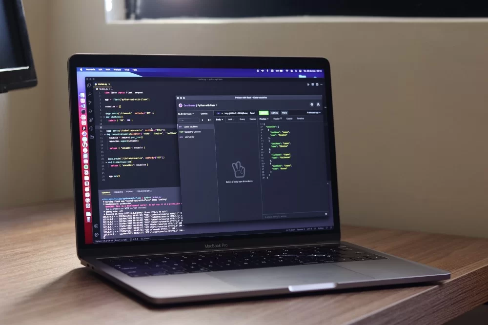

Roadmap
1. Изучайте HTML и CSS
Даже если вы просто хотите разработать причудливые API и серверные системы:
Важно узнать, как работает интерфейсная разработка и как лучше удовлетворять ее потребности.
Чтобы сделать это, вы можете начать с изучения некоторых CSS and HTML
Существует огромное количество потрясающих бесплатных ресурсов о HTML и CSS, я лично просмотрел некоторые:
1.Введение в HTML и CSS — Khanacademy
2.Адаптивный веб-дизайн + бесплатный сертификат на бесплатный код (300 часов)
2. Храните свой серверный код в репозитории — Изучите Git / Контроль версий
Git - это система контроля версий с открытым исходным кодом, которая позволяет вам:
1. Следите за своими изменениями.
2. Создайте резервную копию своего кода.
3. Избегайте катастрофических последствий.
4. Беспрепятственно сотрудничайте.
3. Изучите основы веб-безопасности
Понимать основы веб-безопасности и как правильно обращаться с личной информацией:
1.CORS.
2.HTTP/HTTPS
3.Базовое хеширование
4.Идентификация.
Это лишь некоторые из концепций, с которыми вы будете работать при разработке своих серверных частей и обеспечении безопасности конечных точек API.
Изучите основы кибербезопасности бесплатно в этом удивительном курсе от futurelearn.com .
4.Подключите свой серверный сервер к базе данных
В чем разница между базами данных SQL и NoSQL? Должен ли я использовать Postgres или MongoDB?
Базы данных являются огромной частью серверной разработки, поскольку именно в них обычно будут храниться ваши данные.
Изучение того, как создавать, управлять, редактировать и подключать базы данных SQL и NoSQL, является ключевым для серверного разработчика.
Узнайте о различиях между SQL и NoSQL в этом коротком видео на YouTube.
4. Создайте портфолио: Разработайте свой первый проект
Создание портфолио на пути к тому, чтобы стать бэкенд-разработчиком,
отличный способ как практиковаться, так и применять на практике то, чему вы научились.
Однако на этом этапе вы должны быть достаточно опытны, чтобы начать зарабатывать деньги,
внося свой вклад в проекты с открытым исходным кодом. Это будет не только отличное тренировочное поле,
но и способ получить хороший дополнительный доход.
5. Учитесь на практике: Создавайте проекты
Нет лучшего способа сохранить представления, чем делать и решать проблемы.
Однако иногда поиск серверных проектов для практики кажется трудным делом.
Вот список из более чем 20 идей для бэкенд-проектов, которые вдохновят вас на GitHub.